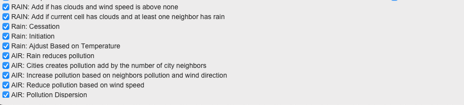

Overview
Welcome to "Simulation Earth" - a groundbreaking project that models our planet using the principles of cellular automata. Inspired by Conway's Game of Life, this 2D grid-based simulation vividly illustrates the complexity of Earth's ecosystems.
In each cell of the grid, diverse ecosystems are represented, ranging from seas and mountains to urban landscapes. Key environmental attributes like temperature, wind speed, rainfall, and pollution levels are dynamically simulated. As each generation progresses, the cells' states evolve, creating a rich tapestry of interconnected ecological phenomena.
Developed for the Biological Computation class at the Open University of Israel in 2024, this project earned a perfect score of 100/100.
Update: The project is now available as an online executable on itch.io for easy access and exploration, as well as in this documentation for detailed insights and analysis. For more projects, check out the portfolio.
üå≥ Background
A cellular automata is a Computation model that is based on a world (grid) of cells, where each cell has a state and a set of rules that determine the state of the cell in the next generation. The rules are based on the state of the cell and the state of its neighbours. The rules are applied to all cells in the grid at the same time, and the next generation is calculated based on the current generation.
The cellular automata model is a powerful tool for modeling complex systems, such as ecosystems, traffic flow, and even social dynamics. The model is based on the idea that complex systems can emerge from simple rules and interactions between individual elements. By simulating the interactions between individual elements, the model can capture the emergent properties of the system as a whole.
For more information about cellular automata, see Wikipedia.
This project is a simulation of Earth's ecosystem using cellular automata. The simulation is based on a 2D grid of cells, where each cell represents a different part of the ecosystem, such as the sea, mountains, or urban areas. The cells have different attributes, such as temperature, wind speed, rainfall, and pollution levels. The simulation evolves over time, with the cells' states changing based on the rules of the simulation.
üåü Key Features
- üåê Dynamic World Modeling: Explore complex cause-effect relationships as each cell's behavior evolves based on its environment and neighboring cells.
- üñ•Ô∏è Real-time Visualization: Watch ecological patterns unfold in real time, with the ability to adjust initial conditions and monitor the simulation's progress.
- üî© Modular Design: Experiment with different simulation rules and initial states, adaptable to scenarios from board games to real-world ecosystem modeling.
- üìä Statistical Analysis: Delve into detailed statistics such as average values, standard deviation, and standard error, enriching the analytical depth.
üöÄ Getting Started
üì¶ Requirements
- matplotlib: Powers the visualizations.
- tkinter: Drives the GUI interface.
üèÉ Running the Simulation
- Prepare the Environment: Ensure
csvfiles are placed in the same directory as the program. - Launch the Simulation:
python3 grid.py # If multiple Python versions are installed: python3.11 grid.py - Customize Your Experience: Modify simulation parameters, select initial states, and apply rules through the intuitive GUI.
üß™ Testing and Analysis
- Example State: Discover with enums.csv, which provides a sample initial state.
- Rich Data: Access comprehensive statistics for in-depth analysis and insights.
- Rule Exploration: Dive into various ecological outcomes by experimenting with different initial states and rules.
Example Rule Exploration:
üí° Insights and Usage
"Simulation Earth" is more than just a project; it's a journey into the interconnectedness of our environment. Through detailed testing and rule adjustment, we've uncovered significant correlations between pollution levels and other environmental aspects. The manually increase temperature rule, for example, demonstrates the profound impact of individual factors on the broader ecosystem.
üõ†Ô∏è Technical Implementation
- üߨ Cellular Automaton Core: A seamless blend of Python's capabilities with the core theories of cellular automata.
- üé≤ State and Neighbors: Cells in a 2D array (
CA.py) each possess a unique state (states.py) and a Moore neighborhood configuration. - üè∑Ô∏è Custom Enum Classes: Enhance rule implementation and maintain finite state values, ensuring robustness and preventing errors.
- üìè Grid and GUI Separation: The
gridclass (grid.py) handles cell layout and state transitions, while theGUIclass (GUI.py) manages simulation control. - ü뮂Äç‚öñÔ∏è Dynamic Rules and Initial States: The
rules.pyandenums.csvfiles enable easy customization of simulation rules and initial states.
üõ†Ô∏è Advanced Coding Techniques and Concepts
The project's simple appearance belies the advanced techniques and concepts that underpin the simulation. By examining specific code snippets, including the update_state method from the Cell class and rules from the TransitionRules class, we can explore how these advanced techniques contribute to a robust, adaptable, and user-friendly simulation environment.
Key Code Snippets:
1. Cell Class - State Update Method:
def update_state(self):
rules = TransitionRules(self)
with rules:
return rules.apply_rules()2. TransitionRules Class - Sample Rules for Rain, Air Quality, and Temperature:
{
'name': 'TEMP: Pollution increases temperature',
'enabled': True,
'condition': lambda neighborhood: neighborhood['center'].air_pollution > AirQuality.CLEAN,
'action': lambda neighborhood: setattr(neighborhood['center'], 'temperature', neighborhood['center'].temperature + neighborhood['center'].air_pollution.value)
},3. Custom Comparable Enum Class:
class ComparableEnum(Enum):
# Custom comparison methods (__lt__, __le__, __gt__, __ge__)
...4. Dynamic GUI Interaction:
def setup_rules_checkboxes(self):
# GUI setup for dynamic rule modification
...
def update_rule_state(self, rule, var):
# Method to update rule state based on GUI interaction
...Analysis of Techniques:
- Enhanced Encapsulation in the Cell Class: The
Cellclass demonstrates encapsulation, managing its state internally. Theupdate_statemethod leveragesTransitionRulesto handle state transitions, keeping the logic neatly contained. - Complex Rule-Based Logic in TransitionRules: The selected rules illustrate the complexity of interactions within the simulation. Each rule encapsulates specific environmental logic, such as how rain, air quality, and temperature interact with other elements.
- Context Manager for Controlled Rule Application: The
TransitionRulesclass employs a context manager to apply rules in a controlled and precise manner. This ensures that the simulation's state changes are coherent and that side effects are minimized. - Dynamic GUI for Real-Time Interactivity: The GUI setup enables real-time, dynamic modifications of the simulation rules, showcasing an advanced level of user interactivity and responsiveness to user inputs.
- Type Safety and Flexibility with Custom Enums: The
ComparableEnumclass extends Python's Enum, facilitating easy comparisons crucial for rule implementation. This ensures type safety and enhances the simulation's flexibility in modeling complex environmental interactions.
These advanced techniques not only demonstrate robust programming practices but also underscore the project's dedication to creating a sophisticated, adaptable, and user-friendly simulation environment.
üñºÔ∏è Screenshots
Explore the GUI Interface and Statistics Panels
Delve into Detailed Statistical Analysis Over Time
Uncover the Correlation Between Pollution and Temperature
üìú License
This project is open-sourced under the MIT License - see the LICENSE file for details.
üì´ Contact
For inquiries, collaborations, or more information, feel free to connect with me on LinkedIn.